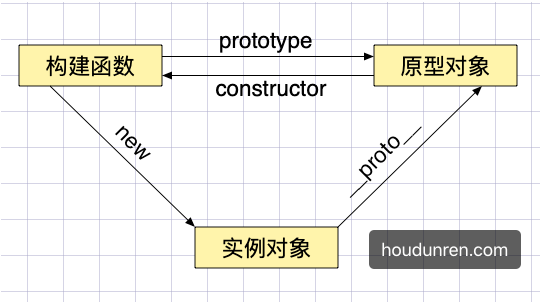
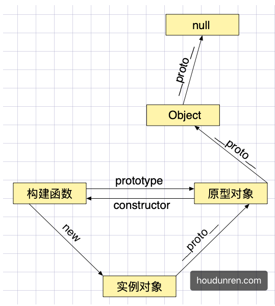
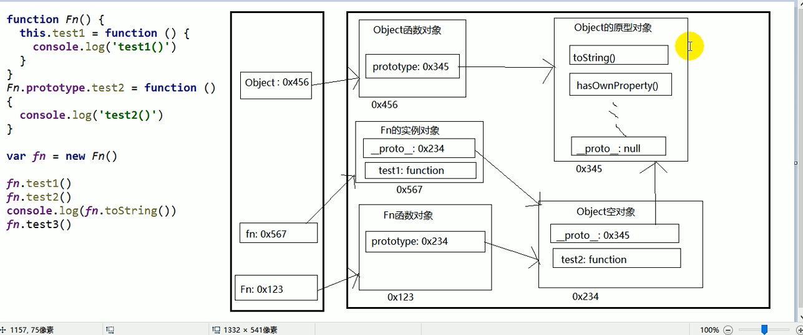

原型与继承
原型对象
每个对象都有一个原型prototype对象，通过函数创建的对象也将拥有这个原型对象，原型对象是一个指向对象的指针。
所有函数的原型默认是Object的实例，可以使用toString/toValues/isPrototypeOf等方法
使用原型对象为多个对象共享属性或方法
如果对象本身不存在属性或方法将到原型上查找
使用原型可以解决，通过构建函数创建对象时复制多个函数造成的内存占用问题
原型包含 constructor 属性，指向构造函数
对象包含 __proto__ 指向他的原型对象

__proto__
在实例化对象上存在 proto 记录了原型，所以可以通过对象访问到原型的属性或方法。
__proto__不是对象属性，理解为prototype的getter/setter实现，他是一个非标准定义__proto__内部使用getter/setter控制值，所以只允许对象或null- 建议使用
Object.setPrototypeOf与Object.getProttoeypOf替代__proto__
原型链
通过引用类型的原型，继承另一个引用类型的属性与方法，这就是实现继承的步骤
使用Object.setPrototypeOf可设置对象的原型
Object.getPrototypeOf用于获取一个对象的原型。
1 | let obj = { |

原型检测
instanceof
检测构造函数的 prototype属性是否出现在某个实例对象的原型链上
使用isPrototypeOf检测一个对象是否是另一个对象的原型链中
prototype构造函数的原型属性Object.create创建对象时指定原型__proto__声明自定义的非标准属性设置原型，解决之前通过Object.create定义原型，而没提供获取方法Object.setPrototypeOf设置对象原型
这几种方式都可以管理原型，一般以我个人情况来讲使用 prototype 更改构造函数原型，使用 Object.setPrototypeOf 与 Object.getPrototypeOf 获取或设置原型。
函数的prototype属性
所有函数都是Function的实例，包含Function本身
1 | Function.prototype === Function.__proto__ // true |
- 每个函数都有一个prototype属性，在创建函数时自动添加，默认指向一个Object空对象（显示原型）
- 原型对象中有一个constructor，指向当前函数对象
- 给原型对象添加属性或方法
- 每个实例对象都有一个__proto__，为隐式原型，创建对象时自动添加
- 对象的隐式原型的值为其对应的构造函数的显示原型的值
- 函数的显示原型对象默认指向空的Object实例对象（Object不满足）
1 | function Person(){ |

读取对象的属性值是，会自动到原型链中查找
设置方法的属性时，不会查找原型链，如果当前对象中没有此属性，直接添加并设置其值
方法一般定义在原型中，属性一般通过构造函数定义在对象本身上。